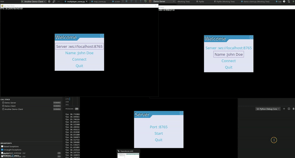

pgz
pgz aim to make development of advanced pygame games easier. pgz uses pgzero as infrastructure intensively, but makes the experience more object oriented.
Features
- More pytonic infrastructure: pgz utilies a lot of features from pgzero
- Multi-scene games: The idea and some code was taken from EzPyGame
- Maps, collision detection and maps scrolling: the implementation is based on pyscroll
- Scenes for rendering Menu based pygame-menu
- Multi-player game over network: based on simple RPC over WebSockets
Installation
not yet
Quick start
pgz heavily uses concepts and some code of EzPyGame and pgzero. pgz game entry point is application, application renders scene, scene can be changed, scene manages actors.
So pgz operates by 3 main concepts:
- Application
- Scene
- Actor
Application
The application and scenes idea was from the EzPyGame.
Example of pgz application start:
if __name__ == "__main__":
app = pgz.Application(
title="pgz Standalone Demo",
resolution=(1280, 720),
update_rate=60,
)
try:
scene = ....
app.run(scene)
except Exception:
# pygame.quit()
raise
Scene
In the snippet above scene object instantiation scene = .... was skipped.
The application and scenes idea was from the EzPyGame.
Scene is the core of your game, but the active scene of you game can be changed, when you need to change the game behavior. Bassically the pgz.Application delegates all the events processing and rendering logic to the active scene.
If the pgz.Application is not require subclassing, the usage of scenes is based on the subclassing idea. There are a few important method to override in pgz.Scene:
handle_event(self, event: pygame.event.Event)- for processing pygame eventsdraw(self, screen: pgz.Screen)- for rendering of the scene screenupdate(self, dt: float)- for modifying the scene stateon_enter(self, previous_scene: pgz.Scene)- for initialization of the sceneon_exit(self, next_scene: pgz.Scene)- for initialization of the scene
class Game(Scene):
...
def on_enter(self, previous_scene):
self.previous_scene = previous_scene
def update(self, dt):
self.player.move(dt)
if self.player.died():
self.application.change_scene(self.previous_scene)
Good news that pgz provides a few pgz.Scene derived scenes for common use cases. So you can subclass from the scene implementation, which is more suitable for your game:
pgz.MenuScene- implements game menu rendering as a pgz.Scene subclasspgz.ActorScene- implements the basic actors managements, updates, rendering logic and actors collision detection.pgz.MapScene- extends pgz.ActorScene for games based on the tiled maps. It also implements the tiles collision detection.pgz.RemoteScene- allows to render the view of remote pgz.MapScene or pgz.ActorScene using WebSocket connection. It might be useful handy for building of a multiplayer game
Actors
Actor concept was inspired from pgzero. Actor is a sprite:
alien = Actor('alien')
alien.pos = 100, 56
The subclassing from the actor may be a good idea for building of the more complicated logic:
class Ship(pgz.Actor):
def __init__(self) -> None:
super().__init__(random.choice(["ship (1)", "ship (2)", "ship (3)", "ship (4)", "ship (5)", "ship (6)"]))
def update(self, dt):
self._old_pos = self.pos[:]
if self.keyboard.up:
self.velocity[1] = -self.speed
elif self.keyboard.down:
self.velocity[1] = self.speed
else:
self.velocity[1] = 0
if self.keyboard.left:
self.velocity[0] = -self.speed
elif self.keyboard.right:
self.velocity[0] = self.speed
else:
self.velocity[0] = 0
self.x += self.velocity[0] * dt
self.y += self.velocity[1] * dt
def move_back(self, dt):
"""If called after an update, the sprite can move back"""
self.pos = self._old_pos[:]
Two important methods for overriding are:
def draw(self, screen: Screen) -> None:
pass
def update(self, dt: float) -> None:
pass
Once actor is constructed in can be attached to ActorScene and the scene will take care of calling draw and update methods:
scene.add_actor(ship)
MapScene
The usage of pgz.MapScene will require the instantiation of a map object. pgz provides a way for loading and handling Tiled maps.
Map loading
The map object loading is done with the map loader (a-la pgzero resource loaders). So for loading a map from "default.tmx" file of the resource directory:
tmx = pgz.maps.default
The "mtx" files can be created and modified with wonderful Tiled mps editor.
Map management and rendering
The maps loading and usage is backed by pyscroll
pgz provides a pgz.ScrollMap class which covers listed functionality: - create and manage a pyscroll group - load a collision layers - manage sprites added to the map - allows to detect collisions with loaded collision layers - render the map and the sprites on top
The code example will load tiled map, instantiate a pgz.ScrollMap object and initialize "Islands" layer of the tmx map as a collision layer.
tmx = pgz.maps.default
map = pgz.ScrollMap(app.resolution, tmx, ["Islands"])
Once the map object is initialized it can be used with pgz.MapScene:
scene = pgz.MapScene(map)
scene.add_actor(ship)
...
if scene.collide_map(ship):
print("I found an island!")
A more complete example of the pgz.MapScene subclassing:
class Game(pgz.MapScene):
def __init__(self, map):
super().__init__(map)
self.ship = Ship()
# put the ship in the center of the map
self.ship.position = self.map.get_center()
self.ship.x += 600
self.ship.y += 400
# add our ship to the group
self.add_actor(self.ship, central_actor=True)
def update(self, dt):
self.map.update(dt)
if self.map.collide_map(self.ship):
self.ship.move_back(dt)
def on_mouse_move(self, pos):
angle = self.ship.angle_to(pos) + 90
self.ship.angle = angle
def on_mouse_down(self, pos, button):
ball = CannonBall(self.ship.pos, pos, self.remove_actor)
self.add_actor(ball)
def on_key_down(self, key):
if key == pygame.K_EQUALS:
self.map.change_zoom(0.25)
elif key == pygame.K_MINUS:
self.map.change_zoom(-0.25)
Game example
The game example which utilizes using all the described concepts, can be fount in demo/demo_standalone.py
Multiplayer game with pgz
pgz provides two key components for converting your single-player into multiplayer-game over the network:
- pgz.MultiplayerSceneServer
- pgz.RemoteScene
Multiplayer game server
MultiplayerSceneServer opens a WebSocket server and instantiate a pgz.Scene per connected player(client):
tmx = pgz.maps.default
map = pgz.ScrollMap((1280, 720), tmx, ["Islands"])
# Build and start game server
self.server = pgz.MultiplayerSceneServer(map, GameScene)
self.server.start_server(port=self.port)
All the scenes will share the map object and collision detector object. So, the communication between different players scenes is done with collision detection. If one scene shoots the cannon ball (by implementing the CannonBall actor and adding its instance to the map):
def on_mouse_down(self, pos, button):
start_point = self.calc_cannon_ball_start_pos(pos)
if start_point:
ball = CannonBall(pos=start_point, target=pos)
self.add_actor(ball, group_name="cannon_balls")
Another player(scene) might be harmed by the cannon ball using the collision detection:
def update(self, dt):
super().update(dt)
cannon_ball = self.collide_group(self.ship, "cannon_balls")
if cannon_ball:
# pgz.sounds.arrr.play()
self.ship.health -= cannon_ball.hit_rate * dt
Multiplayer game client
pgz.RemoteScene allows to communicate with pgz.MultiplayerSceneServer and render the remote scene locally:
data = self.menu.get_input_data()
server_url = data["server_url"]
tmx = pgz.maps.default
map = pgz.ScrollMap(app.resolution, tmx, ["Islands"])
game = pgz.RemoteScene(map, server_url, client_data={"name": data["name"]})
Pay attention that client process needs to have access to the same external resources (like map files, images,...) as the game server.
Multiplayer game example
The multiplayer game example can be found in demo/demo_server.py and demo/demo_client.py
Demo
